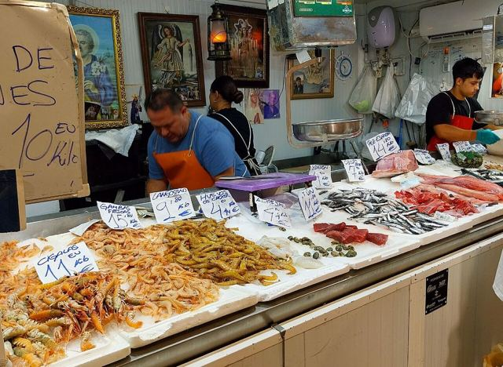
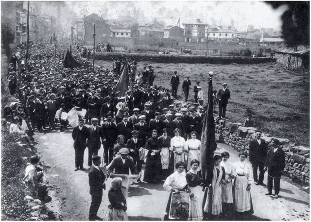
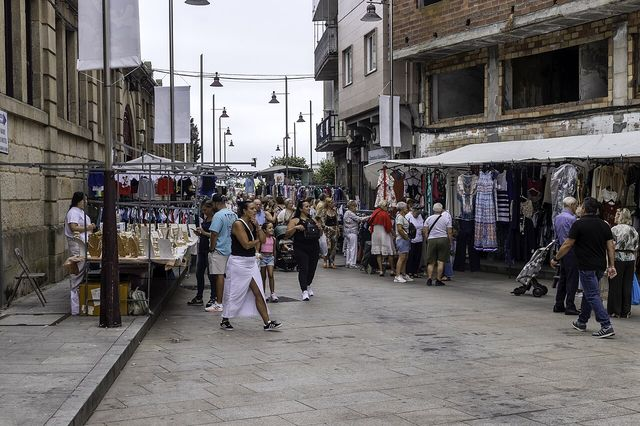

Serie
Las excepciones
Lugares que votan muy distinto de lo que predicen su renta, su edad, su paro y su tamaño.

Puerto Real vota 23 puntos menos a la derecha de lo que predicen sus datos: la mayor excepción de EspañaPor su renta, edad, paro, estudios, extranjeros y tamaño, a Puerto Real (Cádiz) le correspondería dar a PP, Vox y Cs alrededor del 50,1 % del voto.Leer la pieza →
Las cuencas mineras de Asturias votan a la derecha hasta 16 puntos menos de lo que predice su perfil, y a la izquierda como hace veinte añosEn San Martín del Rey Aurelio, Mieres, Langreo y Laviana, PP, Vox y Cs sacaron el 23J entre el 31,7 % y el 36,8 %, entre 11,2 y 16,2 puntos menos de lo que predicen su renta, su edad, su paro y su tamaño.Leer la pieza →
Lalín y Vilanova de Arousa, los dos municipios donde el PP saca más voto por encima de lo que predicen sus datosPor su renta, su edad, su paro y su tamaño, a Lalín le correspondería dar a PP, Vox y Cs el 43,8 % del voto.Leer la pieza → Jódar, el municipio de España que menos vota en relación con su perfil: 11 puntos por debajo en las generalesCon su perfil, a Jódar (Jaén) le correspondería una participación del 74,5 % en las generales de julio de 2023.Leer la pieza →
Jódar, el municipio de España que menos vota en relación con su perfil: 11 puntos por debajo en las generalesCon su perfil, a Jódar (Jaén) le correspondería una participación del 74,5 % en las generales de julio de 2023.Leer la pieza →